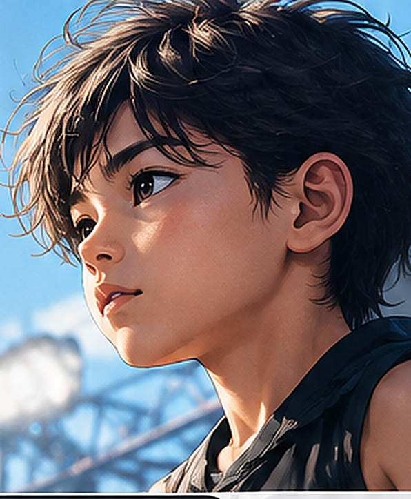
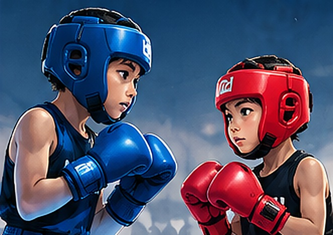
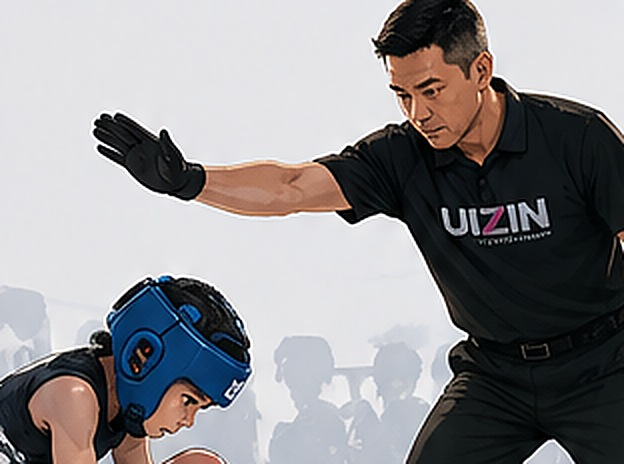
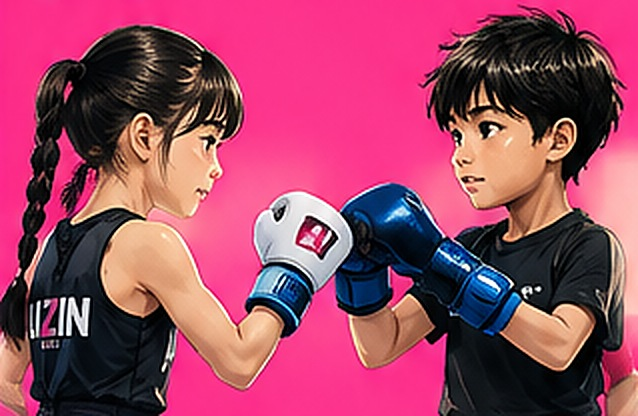
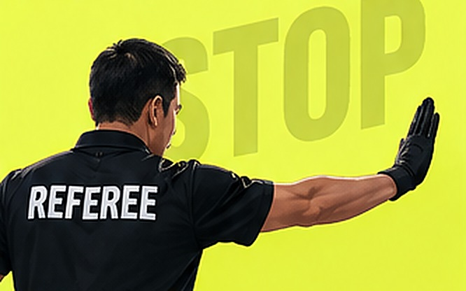
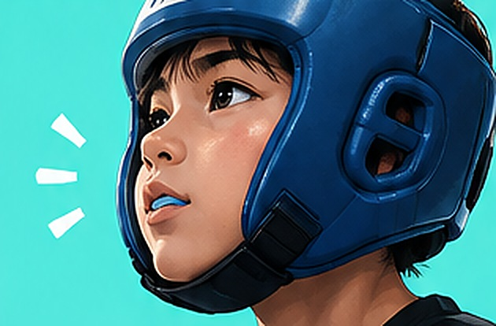

UIZIN 2026
キックボクシング大会のルール

試合
しあい
の前に
親子で
チェック！
大事なルール
7つ
1
1ラウンド
90
秒
休けい
60
秒
2ラウンド
90
秒
90
秒 ×
2
ラウンド
延長
えんちょう
はなし。
みんな おなじ時間だよ
2

顔への
攻撃
こうげき
も
あり
ヘッドギアで 頭を守るよ
幼児から大人まで おなじルール
3
これは
ダメ！
ヒジ打ち
頭突
ずつ
き
顔へのヒザ
投げ
タックル
足をかけて
たおす
関節技
かんせつわざ
関節蹴
かんせつげ
り
首をつかんで
ふり回す
レフェリーが「危ない」と
判断した動きも ダメ
4

ダウン
1
2
ダウン
2回
で
試合
しあい
おわり
2ラウンド 合わせて 2回だよ
5

引き分け
も
あるよ
ジャッジ3人で
判定
はんてい
。
2票以上で 勝ち
6

STOP
「ストップ」で
すぐ止まる
危ないときは
レフェリーが 試合を止めるよ
7

いたい
こわい
やめたい
がまんせず
言っていいよ
レフェリーや セコンドに 伝えてね
安全のために 試合を止めます
まとめ
安全が
いちばん。
1
90秒 × 2ラウンド
2
顔への攻撃あり（ヘッドギア）
3
ヒジ・頭突き・投げ などはダメ
4
ダウン2回で 試合おわり
5
引き分けも ある
6
「ストップ」で すぐ止まる
7
いたい・こわい・やめたい は言っていい
保存して、試合の前に 見返してね
くわしくは ルールブックを見てね
UI
Z
IN
※確認用・配布前｜主催者・審判の最終確認後に公開